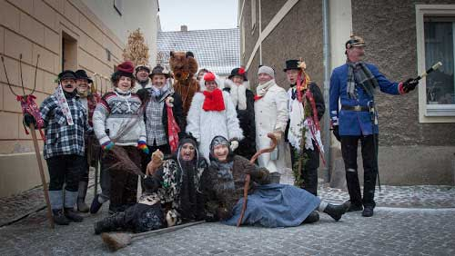
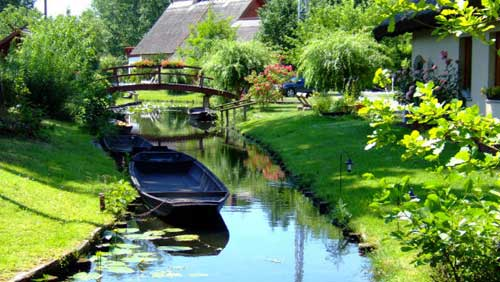
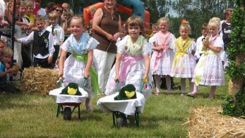

Im Süden Brandenburgs, nur 60 Kilometer südöstlich von der Weltmetropole Berlin entfernt, erwartet Sie eine in Europa einzigartige Natur- und Kulturlandschaft.Auf einer Fläche von rund 2.600 Quadratkilometern, etwa so groß wie das Saarland, präsentiert sich der Spreewald als abwechslungsreiche Region, die Sie verzaubern wird. Quer durch die Reiseregion erstreckt sich das UNESCO-Biosphärenreservat. Wie ein dichtes Netz durchziehen die etwa 300 Wasserarme auf 1.000 Kilometern Länge den Spreewald. Auch zahlreiche Seen prägen das vielfältige Landschaftsbild.
Die geheimnisvolle Landschaft entstand in der Eiszeit. Heute schlängeln sich auf 1.000 Kilometern Wasserläufe durch die Naturkulisse. Mehr als ein Drittel des Spreewalds ist mit einem Jahrhundert alten Wald bedeckt, welcher der Region ihren Namen gibt. Das Biosphärenreservat bildet einen Lebensraum für viele seltene Tier- und Pflanzenarten.
Seit Jahrhunderten ist der Spreewald ein von Menschen geprägter Naturraum. Er zählt zum Siedlungsgebiet der Sorben, einem Volk slawischer Abstammung mit eigener Sprache und Kultur, welches seit mehr als 1000 Jahren diese Landschaft kultiviert. Diese Einflüsse begegnen Ihnen bei Ihrem Besuch auf unterschiedlichste Weise – in Form von zweisprachigen Ortsschildern, in Straßennamen, in der Trachtenvielfalt oder bei traditionellen Veranstaltungen. Sie werden staunen, was es im Winter mit dem "Zampern", zu Ostern mit dem "Eiermalen", zur Erntezeit mit dem "Froschkarren" und "Stollereiten" oder im Herbst mit der "Spinte" auf sich hat.

{kind=link}
Zampern
Eine alte sorbische Tradition in zahlreichen Dörfern der Lausitz. Entstanden aus vorchristlichen Glaubensformen ein heute immer noch beliebtes Volksfest.

{kind=link}
Kahnfahren
Entdecken Sie den Spreewald mit dem Kahn oder mit dem Paddelboot. Die schier unendlichen Wasserarme bieten ein reiches Naturschauspiel.
{kind=link}
Sorbische Eier
Sorbische Ostereier gehören zur Kultur der Sorben. Mit verschiedenen Techniken werden Eier aufwändig bemalt und reich verziert.

{kind=link}
Froschkarren
Die Mädchen setzen einen Frosch auf eine Leiterkarre und veranstalten ein Wettrennen. Wer zuerst mit dem Frosch in das Ziel gelangt ist Siegerin.